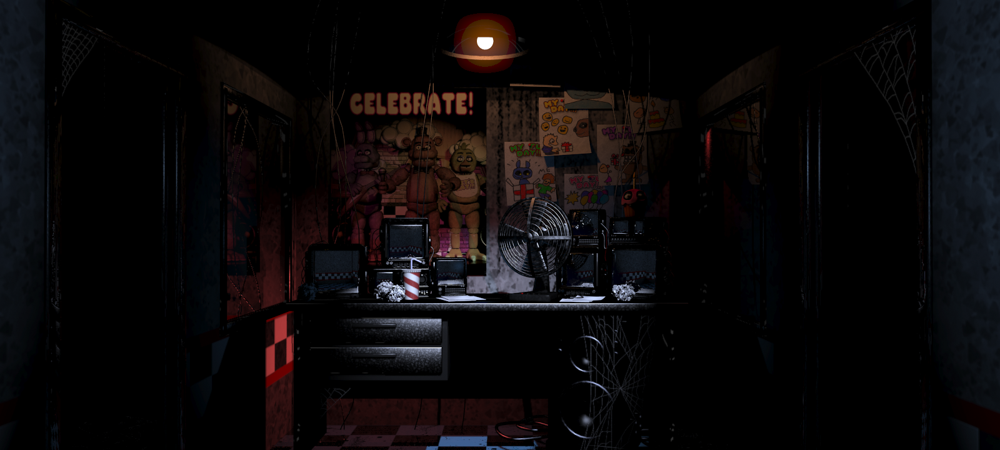
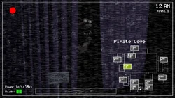
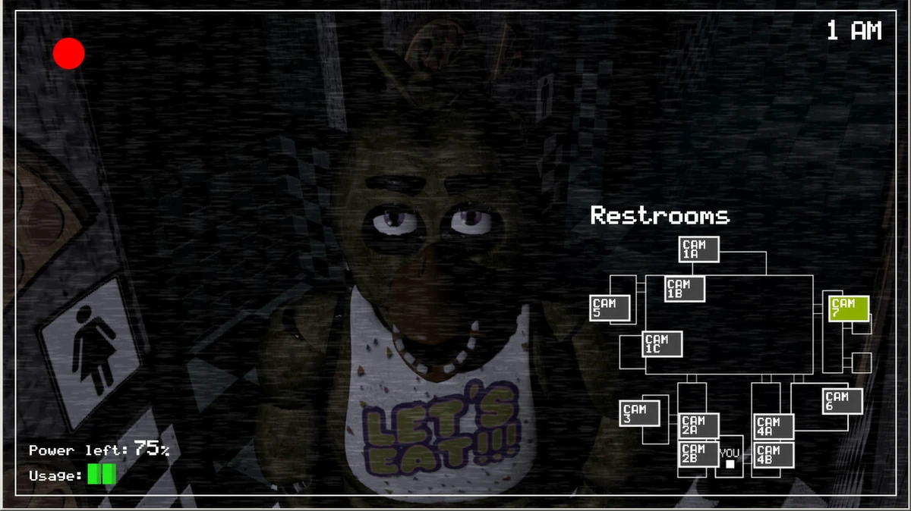
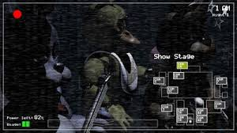
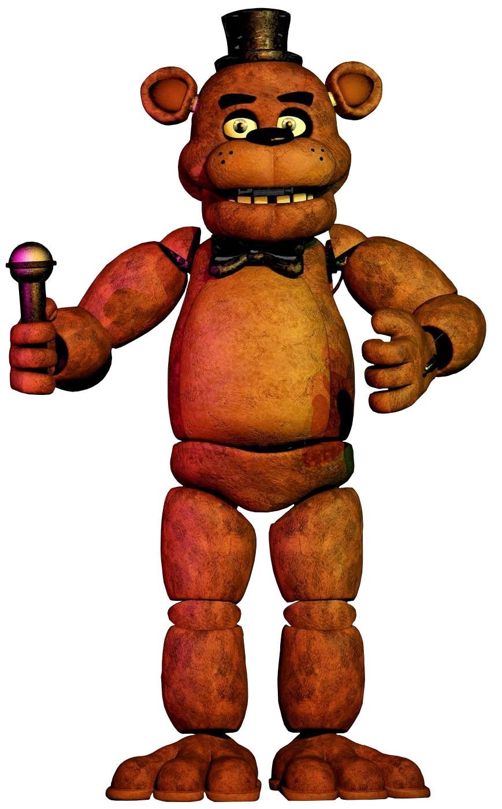
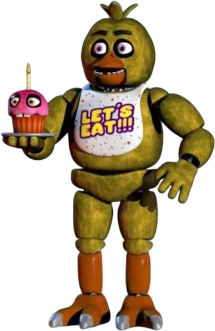
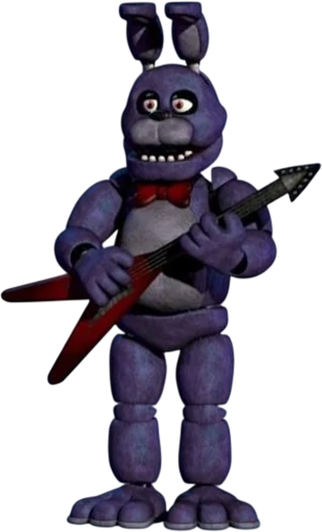
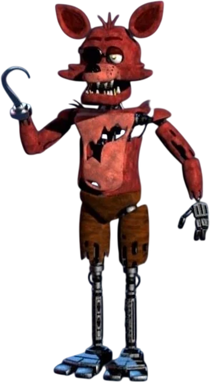
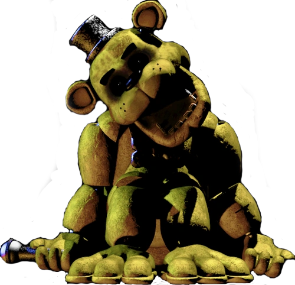
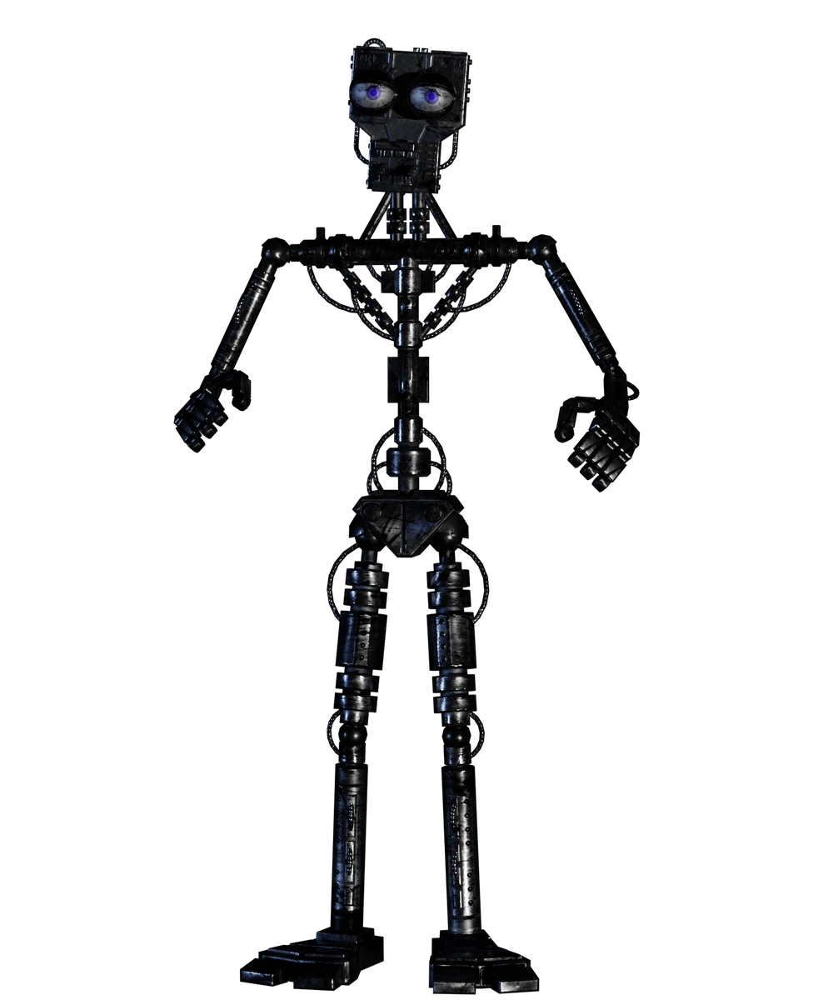

Resumo do jogo
O primeiro jogo da linha criado, contendo as primeiras impressões de como é ser um guarda noturno em um ambiente desconhecido, claustrofobico e escuro. Outros personagens animatrônicos estão com você na pizzaria Freddy Fazbear's Pizza, e você tem que passar apenas 5 noites, mais uma extra difícil. Um detalhe muito importante é que os robôs se mexem sozinhos...
Durante o jogo
Conforme o passar das noites, o homem do telefone, Phone Guy, irá dar dicas, e você aprenderá mecânicas distintas para defender-se dos animatrônicos. Um exemplo é fechar a porta para que eles não entrem na sala.
Algumas imagens do jogo




Os personagens:

Freddy Fazbear

Chica Chicken

Bonnie Bunny

Foxy Pirate

Golden Freddy

Endo 01
Curiosidades
Tela Game Over; a tela game over representa o jogador colocado dentro de um traje do Freddy, pois segundo teorias, os animatrônicos te enxergam como um endoesqueleto.
Um endoesqueleto é o robô interno dos trajes, que os fazem se mover.